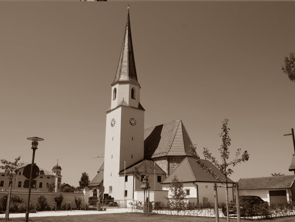

In welchen Bereichen engagiert sich die Stiftung?
Kinder- & Jugendhilfe

Die Kinder und Jugendlichen brauchen eine starke Gemeinschaft in der sie behütet und sorgenfrei heranwachsen können - Gerade deshalb, weil sie die Zukunft und tragende Säule eben dieser Gesellschaft sind.
Bildung & Ausbildung
Bildung muss als kein selbstverständliches, aber absolut notwendiges Gut einer starken Gemeinschaft angesehen werden - Als Befähigung zum selbstbestimmten Denken, die gefördert und gefordert werden soll.
Altenhilfe
Unweigerlich kommt für jeden Menschen irgendwann der Punkt, an dem man nach Jahrzehnten des Gebens, des Aufopferns und des Dienstes an der Gemeinschaft auf Unterstützung angewiesen ist. Gerade bei einer alternden Bevölkerung muss diese Unterstützung noch mehr ausgebaut werden.
Kunst & Kultur
Seit jeher war es die Kunst und die Kultur, die ganze Epochen defnierte. Als Stifung die aus der Erhaltung des bayerischen Brauchtums erwachsen ist, liegt uns besonders die bayerische Kultur sehr am Herzen.
Sport
Sport ist schon immer eine wichtiger Teil der Gemeinschaft, durch den viele Menschen zueinander finden und miteinander die selben Ziele verfolgen.
Naturschutz
In Zeiten, in denen die Umwelt immer mehr ausgebeutet wird, muss man sich bewusst machen, dass diese eine Natur die einzige und letzte ist, die wir haben werden. Ein besonderer Schutz dieser ist also unerlässlich.
Denkmalschutz & -pflege
Denkmäler & historische Bauten sind Zeugen einer anderen Zeit, die nicht in Vergessenheit geraten dürfen. Jede Gemeinschaft hat ihre Wurzeln in der Vergangenheit - wer das Andenken an diese vergangenen Zeiten nicht in Ehren hält, wird auch bald den Sinn der Gemeinschaft vergessen.
Bürgerschaftliches Engagement
Eine Gesellschaft zeichnet sich durch ihre gelebte Gemeinschaft aus. Der Erhalt und Aufbau gemeinsamer Ziele und Werte erfodert das Engagement jedes Einzelnen, um auch den nächsten Generationen eine gemeinschaftliches Leben in dieser Gesellschaft zu ermöglichen.
Rettung aus Lebensgefahr
Oft genug reißen schwere Schicksalsschläge Löcher in die Mitte unserer Gesellschaft. Dabei wird leider auch zu oft die gemeinsame Veranwortung vergessen, Opfer, Angehörige, Helfer in einer starken Gemeinschaft aufzufangen.
Gesundheitswesen
Die Gesundheit ist eines der höchsten Güter eines Menschen. Sich diese zu erhalten sollte jedem in dem Umfang möglich sein, in dem es für ihn notwendig ist.
Mildtätige Zwecke
Eine Gemeinschaft ist immer nur so stark, wie ihr schwächstes Glied, was im Umkehrschluss bedeutet, dass durch eine Unterstützung der Schwächsten die ganze Gemeinschaft gestärkt wird.
Heimatpflege & -kunde
Der Burschenverein Unterneukirchen hat es sich zum erklärten Ziel gemacht, das Brauchtum und die Heimat zu erhalten. Dieser Gedanke ist nun mit der Gründung der Stiftung nochmal bekräftigt worden und soll so fortgesetzt werden.